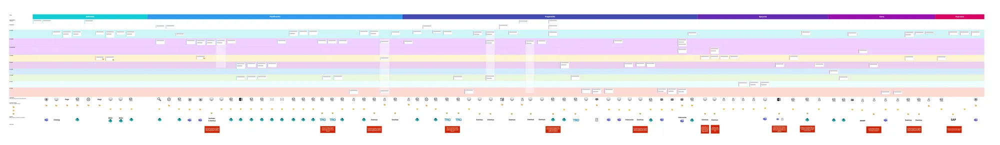
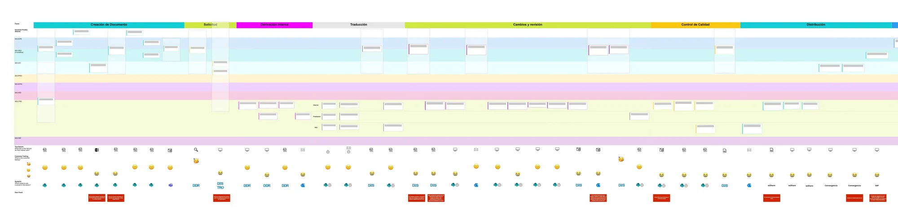

Contexto
Este proyecto fue desarrollado junto a la Secretaría del Banco Interamericano de Desarrollo (BID), un área con una estructura altamente compleja y fragmentada. Cada departamento operaba como un silo independiente —y muchas veces cada persona también— lo que generaba sobrecarga, duplicidad de tareas y baja visibilidad organizacional.
La Secretaría es un área crítica del BID que sirve a múltiples stakeholders internos y externos:
- Las «Sillas» (Board): Representantes de países miembros que toman decisiones estratégicas
- El Presidente del BID
- Empleados del banco de múltiples departamentos
- Área de traducciones: Encargada de entregar documentos a las Sillas para toma de decisiones
Nuestra misión era entender ese ecosistema denso de relaciones, procesos, herramientas y tensiones para rediseñar los servicios internos y mejorar la experiencia de quienes los usan y gestionan. El proyecto se desarrolló 100% de forma remota, conectando con personas en 7-10 países diferentes.
El Desafío
¿Cómo rediseñar los servicios de una unidad con más de 50 sistemas en uso (entre herramientas legacy, soluciones parche y herramientas informales), donde los procesos están atomizados y cada equipo ha tenido que "inventar" su propia manera de operar?
La Secretaría enfrentaba múltiples barreras críticas:
- Fragmentación total de la gestión del trabajo: Cada departamento operaba como isla independiente
- Procesos informales: Nacidos por necesidad, sin documentación ni trazabilidad
- Herramientas desconectadas: 50+ sistemas sin integración entre sí
- Saturación operativa y emocional: Personal desgastado por retrabajo constante
- Falta de visibilidad organizacional: Nadie tenía una visión completa del flujo de trabajo
Nuestro reto era construir una visión común que permitiera evolucionar sin generar más caos.
Mi Rol en el Proyecto
Como Lead Service Designer en Continuum, lideré la estrategia de investigación, el proceso de diseño y la coordinación del equipo multidisciplinario durante los 6 meses del proyecto.
Composición del equipo:
- Yo (Lead Service Designer)
- 2 Service Designers bajo mi liderazgo
- 3 UX/UI Designers
- 1 Project Manager
Mis responsabilidades incluyeron:
- Diseñar el enfoque completo de investigación cualitativa
- Realizar más de 40 entrevistas en profundidad (en inglés y español)
- Liderar la sistematización y análisis de las 80 entrevistas totales
- Coordinar y guiar el trabajo de los 2 Service Designers del equipo
- Definir oportunidades estratégicas y liderar el rediseño de procesos clave
- Diseñar sistema de cuestionarios y plantillas para ordenar solicitudes
- Planificar y supervisar todos los entregables del proyecto
- Generar ambientes de confianza en contextos sensibles y formales
Enfoque y Proceso
Implementamos un proceso de investigación y diseño profundo, enfocado en entender la complejidad sistémica antes de proponer soluciones.
1. Investigación Cualitativa Profunda
Inmersión total en el ecosistema de la Secretaría:
- 80 entrevistas con personas de distintas regiones, niveles jerárquicos y unidades
- Yo personalmente realicé más de 40 entrevistas en inglés y español
- Entrevistamos a empleados del banco, representantes de las Sillas (Board) de 7-10 países, y el equipo de Secretaría
- Generación de ambientes de confianza en contextos sensibles y formales
- Análisis de tensiones estructurales, emocionales y relacionales
- Exploración de más de 50 sistemas y herramientas utilizadas activamente
2. Diagnóstico de Desconexión y Puntos de Dolor
Sistematización profunda de hallazgos:
- Mapeo de flujos rotos, duplicidades, bloqueos y sistemas informales
- Identificación de tareas críticas sin trazabilidad ni claridad de responsables
- Documentación de casos extremos como: una trabajadora que mantenía tres tablas de Excel con la misma información (una compartida, una privada y una de respaldo) debido a la desconfianza generada por ediciones no controladas
- Análisis del ecosistema de 50+ herramientas sin integración
- Journey Maps y Ecosystem Maps del servicio actual
3. Diseño de Soluciones de Organización Interna
Co-creación de sistemas que reducen el caos sin añadir carga:
- Creación de arquetipos de usuarios internos
- Rediseño de cómo se reciben, organizan y ejecutan las tareas en Secretaría
- Diseño de un sistema de entrada con cuestionarios automáticos para clarificar requerimientos
- Propuestas de herramientas compartidas que reducen el retrabajo y aumentan la visibilidad
- Plantillas estandarizadas para solicitudes de servicio
- Flujos rediseñados con trazabilidad clara de responsables y estados
4. Entrega e Implementación
Documentación estratégica para la acción:
- Documento estratégico completo con hallazgos y recomendaciones
- Cuestionarios implementables listos para uso inmediato
- Plantillas de solicitud rediseñadas
- Roadmap de implementación escalable
- El informe fue presentado en asamblea y usado para reestructurar toda la Secretaría en 2021
Hallazgos Clave
La complejidad invisible del trabajo "invisible"
Descubrimos que gran parte del trabajo de la Secretaría era invisible incluso para la propia organización. Procesos críticos dependían de la memoria institucional de personas específicas, sin documentación ni respaldo.
El costo humano de los sistemas fragmentados
Las 50+ herramientas no solo generaban ineficiencia técnica: generaban agotamiento emocional. Las personas invertían más tiempo gestionando sistemas que haciendo su trabajo real.
Desconfianza sistémica
La falta de trazabilidad y visibilidad había generado culturas de desconfianza. Ejemplo: mantener tres versiones de la misma tabla porque "alguien siempre borra algo sin avisar".
Cada área había inventado su propio sistema
Ante la falta de procesos claros, cada equipo había desarrollado soluciones propias (Excel, emails, grupos de WhatsApp, carpetas compartidas sin estructura). Esto multiplicaba la complejidad.
Alta sensibilidad cultural y política
Trabajar con representantes de 7-10 países requería navegar diferencias culturales, protocolos formales y dinámicas de poder con mucha sensibilidad y respeto.
Resultados
Impactos específicos:
- 80 entrevistas procesadas y sintetizadas en hallazgos accionables
- Análisis completo de 50+ sistemas utilizados activamente por la Secretaría
- Rediseño de flujos para solicitud y seguimiento de tareas con trazabilidad clara
- Plantillas y cuestionarios implementables para clasificar y gestionar requerimientos
- Propuestas escalables para mejorar coordinación sin sobrecargar al equipo
- Documento estratégico entregado y usado para la siguiente fase de implementación
- El informe fue presentado en asamblea y utilizado para reestructurar toda la Secretaría del BID en 2021
Aprendizajes de Liderazgo
Liderar en contextos complejos requiere empatía estructural
Como Lead Service Designer, aprendí que liderar un equipo de 6 personas en un proyecto de esta complejidad no se trata solo de distribuir tareas, sino de sostener la visión estratégica mientras cuidas el bienestar emocional del equipo. Las entrevistas eran emocionalmente pesadas, y debía crear espacios seguros para procesar lo que escuchábamos.
La investigación es un acto político
Entrevistar a personas en posiciones de poder (las Sillas, el Presidente) requiere un balance delicado entre respeto protocolar y profundidad investigativa. Aprendí a navegar estas dinámicas sin comprometer la calidad de los hallazgos.
La sistematización es tan importante como la investigación
Con 80 entrevistas, el reto no era solo recoger información, sino transformarla en insights accionables. Lideré el proceso de análisis asegurando que cada hallazgo estuviera respaldado y conectado con recomendaciones concretas.
Reflexiones
La dignidad del trabajo merece un sistema que no desgaste.
Este fue uno de los proyectos más desafiantes y sensibles en los que he participado. Trabajamos en un equipo multidisciplinario de 7 personas, enfrentando un entorno marcado por el agotamiento, la desorganización estructural y el deseo genuino de hacer las cosas mejor.
Diseñar en este contexto me enseñó a moverme entre la empatía profunda y la claridad estratégica. Aprendí a sostener la complejidad, a escuchar sin juzgar, y a facilitar conversaciones difíciles pero necesarias. También aprendí que liderar un equipo en estas condiciones requiere crear espacios seguros donde el equipo pueda procesar emocionalmente lo que escuchamos.
A veces, el diseño no empieza con una solución brillante, sino con la humildad de reconocer que, incluso en medio del caos, la dignidad del trabajo de las personas merece un sistema que no las desgaste. Este proyecto me enseñó que el diseño de servicios, en su forma más profunda, es un acto de cuidado institucional.
Ver cómo nuestro trabajo fue utilizado en asamblea para reestructurar toda la Secretaría en 2021 fue la confirmación de que cuando diseñamos con rigor, empatía y visión sistémica, podemos generar cambios reales en organizaciones complejas.
Recursos Visuales
Journey Maps
Mapeo de la experiencia actual de los diferentes usuarios del servicio de Secretaría.

Journey Maps de usuarios internos y externos Reunión Anual

Journey Maps de usuarios internos y externos Documentación y traducción
Ecosystem Map
Visualización del ecosistema complejo de relaciones, procesos y herramientas de la Secretaría del BID.
Ecosystem Map mostrando la complejidad sistémica